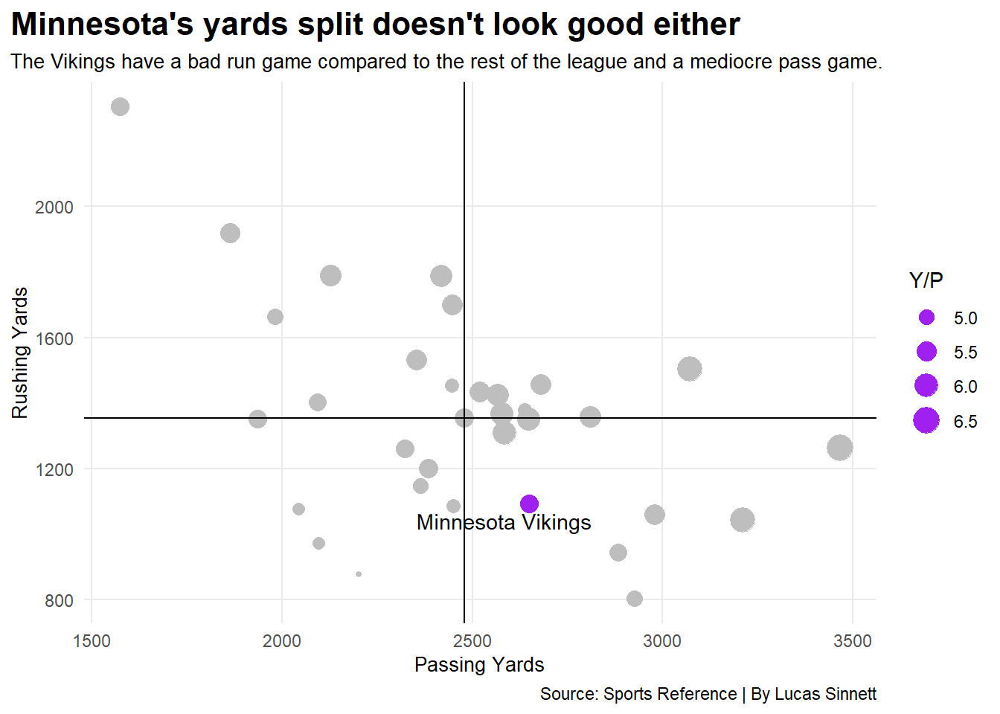
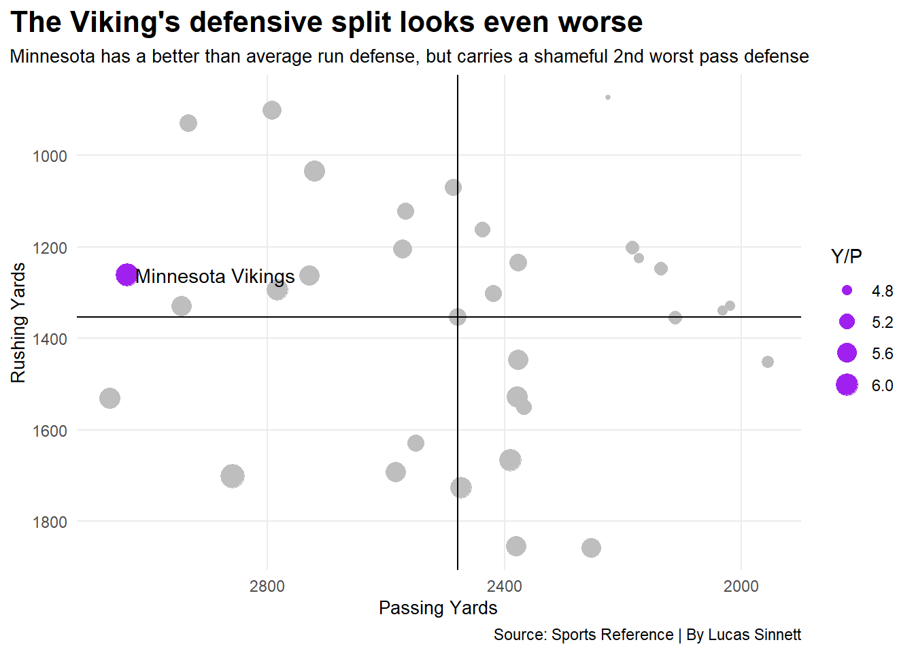
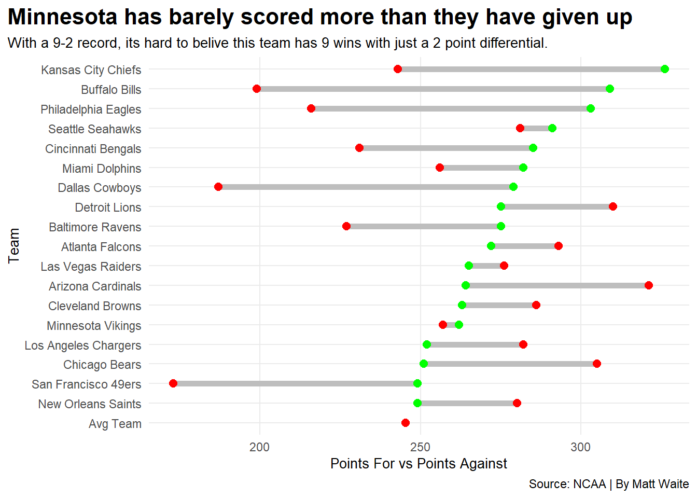

The Minnesota Vikings have had one of the best starts in the NFL this year and one of the best in their recent history. With their 9 and 2 record they are 2nd in the NFC and Third in the NFL through week 12. However, their record may not be as deserved as many people think when we look at the numbers.
The Vikings have a long history of blowing leads and missing field goals to lose their seasons. So why does any regular Vikings fan have any reason to feel confident in this season. The answer is “they don’t”. Minnesota has had many unconvincing wins against losing teams this season and two blowout losses to good teams.
A fan might wonder, how do the Vikings match up with other teams in the NFL?
Code
library(tidyverse)library(ggalt)library(ggplot2)library(gt)library(ggrepel)def <-read_csv("2022defense.csv")off <-read_csv("2022offense.csv")combineoff <- off %>%arrange(Tm)combinedef <- def %>%arrange(Tm) combinedef$PF <-c(264.0,272.0,245.3,21.9,275.0,309.0,230.0,251.0,285.0,263.0,279.0,157.0,275,235,174,173,244,326,265,7849,252,178,282,262,239,249,225,230,303,170,249,291,200,209,233)combinedef2 <- combinedef %>%filter( PF<400, PF>245 )def2 <- def %>%filter( PA<400, PA>100 )def3 <- def2 %>%filter(Yds...5>4060) %>%select(Tm,`Y/P`,Yds...5) %>%arrange(desc(Yds...5))off2 <- off %>%filter( PF<400, PF>100 )off3 <- off2 %>%filter( Yds...5<3744 ) %>%select(Tm,`Y/P`,Yds...5) %>%arrange(Yds...5)def3 %>%gt() %>%cols_label(Yds...5 ="Total Yards Against",`Y/P`="Yards Per Play",Tm ="Team" ) %>%tab_header(title ="The Vikings have a terrible defense",subtitle ="Minnesota ranks third in yards given up and second in yards per play." ) %>%tab_style(style =cell_text(color ="black", weight ="bold", align ="left"),locations =cells_title("title") ) %>%tab_style(style =cell_text(color ="black", align ="left"),locations =cells_title("subtitle") ) %>%tab_source_note(source_note =md("**By:** Lucas Sinnett | **Source:** Sports Reference") ) %>%tab_style(locations =cells_column_labels(columns =everything()),style =list(cell_borders(sides ="bottom", weight =px(3)),cell_text(weight ="bold", size=12) ) ) %>%opt_row_striping() %>%opt_table_lines("none") %>%tab_style(style =list(cell_fill(color ="purple"),cell_text(color ="white") ),locations =cells_body(rows = Tm =="Minnesota Vikings") )
The Vikings have a terrible defense
Minnesota ranks third in yards given up and second in yards per play.
Team
Yards Per Play
Total Yards Against
Atlanta Falcons
5.8
4597
Detroit Lions
6.3
4560
Minnesota Vikings
6.1
4298
Seattle Seahawks
5.7
4276
Arizona Cardinals
5.7
4274
Houston Texans
5.7
4235
Chicago Bears
5.9
4200
Carolina Panthers
5.3
4178
Green Bay Packers
5.6
4111
Las Vegas Raiders
5.9
4077
By: Lucas Sinnett | Source: Sports Reference
The Vikings look awful on defense through 12 weeks ranking third in total yards given up and second in yards given up per play. So obviously, Minnesota’s defense is not the greatest, but what about about their offense.
Code
off3 %>%gt() %>%cols_label(Yds...5 ="Total Yards Gained",`Y/P`="Yards Per Play",Tm ="Team" )%>%tab_header(title ="It doesn't get much better on the offensive side of the ball",subtitle ="Minnesota's offense is mediocre at best placing 12th worst in the league in total yards." ) %>%tab_style(style =cell_text(color ="black", weight ="bold", align ="left"),locations =cells_title("title") ) %>%tab_style(style =cell_text(color ="black", align ="left"),locations =cells_title("subtitle") ) %>%tab_source_note(source_note =md("**By:** Lucas Sinnett | **Source:** Sports Reference") ) %>%tab_style(locations =cells_column_labels(columns =everything()),style =list(cell_borders(sides ="bottom", weight =px(3)),cell_text(weight ="bold", size=12) ) ) %>%opt_row_striping() %>%opt_table_lines("none") %>%tab_style(style =list(cell_fill(color ="purple"),cell_text(color ="white") ),locations =cells_body(rows = Tm =="Minnesota Vikings") )
It doesn't get much better on the offensive side of the ball
Minnesota's offense is mediocre at best placing 12th worst in the league in total yards.
Team
Yards Per Play
Total Yards Gained
Houston Texans
4.8
3069
Los Angeles Rams
4.6
3078
Pittsburgh Steelers
4.8
3122
Tennessee Titans
5.3
3287
Carolina Panthers
5.2
3496
Denver Broncos
5.0
3510
Indianapolis Colts
4.9
3535
New York Jets
5.3
3584
New England Patriots
5.4
3585
New York Giants
5.1
3645
Tampa Bay Buccaneers
5.1
3730
Minnesota Vikings
5.3
3743
By: Lucas Sinnett | Source: Sports Reference
The Vikings don’t have a very spectacular looking offense as they are 12th worst in the league in total yards gained along with a mediocre yards per play. Let look more specifically at the yard split to see where Minnesota sits.
Code
minnesotaoff <- off2 %>%filter(Tm =="Minnesota Vikings")ggplot() +geom_point(data=off2, aes(x=Yds...13, y=Yds...19, size=`Y/P`),color="grey" )+geom_point(data=minnesotaoff, aes(x=Yds...13, y=Yds...19, size=`Y/P`), color="purple") +geom_vline(xintercept =2478.8) +geom_hline(yintercept =1353.3) +geom_text_repel(data=minnesotaoff, aes(x=Yds...13, y=Yds...19, label=Tm) )+labs(title ="Minnesota's yards split doesn't look good either", subtitle="The Vikings have a bad run game compared to the rest of the league and a mediocre pass game.", x="Passing Yards", y="Rushing Yards", caption="Source: Sports Reference | By Lucas Sinnett") +theme_minimal() +theme(plot.title =element_text(size =16, face ="bold"),axis.title =element_text(size =10), plot.subtitle =element_text(size=10), panel.grid.minor =element_blank(),plot.title.position ="plot" )

Minnesota has an above average pass game with a below average run game. The Vikings are dangerously average on offense for a team that is trying to have a deep playoff run.
Code
minnesotadef <- def2 %>%filter(Tm =="Minnesota Vikings")ggplot() +geom_point(data=def2, aes(x=Yds...13, y=Yds...19, size=`Y/P`),color="grey" )+geom_point(data=minnesotadef, aes(x=Yds...13, y=Yds...19, size=`Y/P`), color="purple") +geom_vline(xintercept =2478.8) +geom_hline(yintercept =1353.3) +geom_text_repel(data=minnesotadef, aes(x=Yds...13, y=Yds...19, label=Tm) ) +scale_y_reverse()+scale_x_reverse()+labs(title ="The Viking's defensive split looks even worse", subtitle="Minnesota has a better than average run defense, but carries a shameful 2nd worst pass defense", x="Passing Yards", y="Rushing Yards", caption="Source: Sports Reference | By Lucas Sinnett") +theme_minimal() +theme(plot.title =element_text(size =16, face ="bold"),axis.title =element_text(size =10), plot.subtitle =element_text(size=10), panel.grid.minor =element_blank(),plot.title.position ="plot" )

The defensive split looks a whole lot worse for the Vikings as they are second worse in passing with a slightly above average run defense. A lot of fans would likely say that the only stat that matters is the points at the end of the game, so lets look at those.
Code
ggplot() +geom_dumbbell(data=combinedef2, aes(y=reorder(Tm, PF), x=PF, xend=PA),size =2,colour ="grey",colour_x ="green",colour_xend ="red" ) +labs(title ="Minnesota has barely scored more than they have given up", subtitle="With a 9-2 record, its hard to belive this team has 9 wins with just a 2 point differential.", x="Points For vs Points Against", y="Team", caption="Source: NCAA | By Matt Waite") +theme_minimal() +theme(plot.title =element_text(size =16, face ="bold"),axis.title =element_text(size =10), plot.subtitle =element_text(size=10), panel.grid.minor =element_blank(),plot.title.position ="plot" )

Minnesota has a point differential of plus two which is the smallest margin of any team in the Super Bowl era with 9 wins and 2 losses. Being a fan, this would bring great concern to the legitimacy of this team and whether or not they will contend.